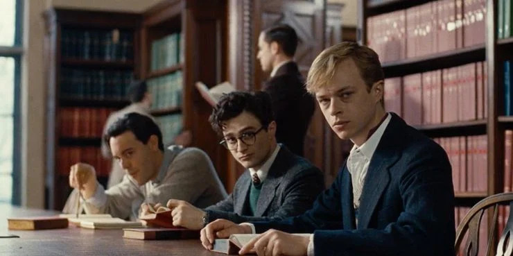
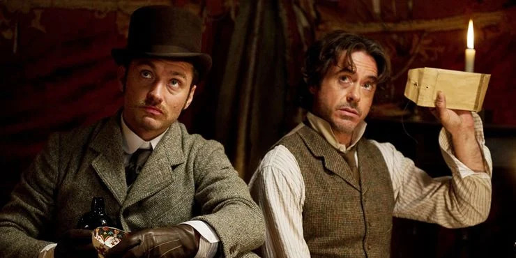
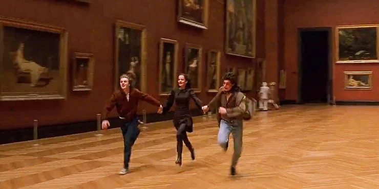

Boarding schools, tweed jackets, Latin classes, black coffee – these are just some of the
things that illustrate and describe dark academia. The aesthetic became a popular trend
among young adults who are genuinely keen on broadening their perspectives on
just about everything under the sun, but particularly the art of literature.
Dark academia is a type of aesthetic that romanticizes the yearning for knowledge, especially in literature and classical studies. It could be expressed through fashion, photography, writing, and films. Movies with dark academia themes are often set in Ivy League or prestigious universities, could involve a case of murder, or simply one’s pursuit of self.
Dead Poets Society is probably the peak of all dark academia films. This heartwarming as well as tear-jerking movie will teach fans the importance of self-discovery and freedom of expression.
Kill Your Darlings is loosely based on the lives of poets Allen Ginsberg and Lucien Carr, who attended Columbia University and got involved in the murder of one of their acquaintances.
Maurice tells the extraordinary story of two star-crossed lovers. Maurice confesses that he is in love with Clive, and the latter gradually realizes that he is also attracted to his friend.
Set during the 1800s, this visually pleasing and gothic-inspired historical drama narrates the early life of the Romantic writer Mary Shelley and the creation of her best work, Frankenstein.
Of course, the genius detective Sherlock Holmes perfectly fits the dark academia theme. Though the whole film is not set in a university, his love for knowledge satisfies every aspect of the aesthetic.
British intelligence recruits Cambridge mathematics genius Alan Turing to crack Nazi codes that cryptanalysts thought were unbreakable. Turing analyzes the Enigma messages, builds a machine to decipher them.
This film follows the narrative of a group of students attending Oxford University who join a secret society where they learned that a reputation can be ruined in just one evening.
This French-English film follows three students who found an unusual friendship in one another. They dream of utopian love and self-discovery in the age of revolutionary idealism.
Enthralled by his own beauty, Dorian Gray decided to barter his soul to the devil to keep his youth. Based on the novel by Oscar Wilde, Dorian Gray is a representation of the human desire for immortality.